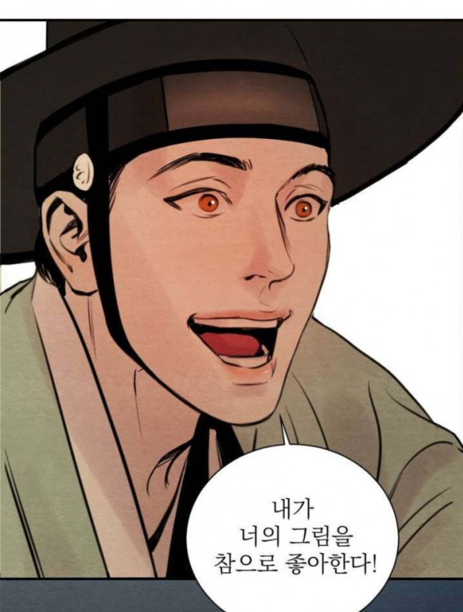

- 주간비엘
- 주간웹툰
- 주간드씨
주간웹툰
레진코믹스의 비엘 란에서 멱살을 잡고 리드하는 대표적인 조선비엘 야화첩

야화첩 작가와의 인터뷰 존잼입니다
윤승호
생일 : 1월 15일 / 신장 : 188cm
백나겸과 함께 이 작품의 주인공 남 캐릭터.
세도가 윤씨 가문의 장남, "개망나니"로 불릴 정도로 남색을 매우 밝히고 성격이 나쁘다.[1][2] 백나겸의 춘화를 매우 마음에 들어하여 나겸을 자기 집으로 불러 자신의 성행위를 보고 춘화를 그리게 한다. 돈과 권력이 막강한 세도가의 장남이고, 문무를 두루 갖추었지만[3] 정작 관직에는 흥미가 없어 한량처럼 지내며, 밤낮을 가리지 않고 남색을 즐긴다.
그리고 섹시하고 화려한 멋진 외형과 백나겸을 아끼는 행동 때문에 매력적이지만 상당히 나쁜 놈이다.[4][6] 오죽하면 변덕 원작 작가도 정인헌보다 더 인성 파탄자라고 인정했다.[7][8]
특별판에서는 노비로 등장하였지만 본편과 비교하여 성격 자체는 크게 다르지 않은 모습을 보였다.
백나겸
생일 : 4월 20일 / 신장 : 174cm / 일본어 지원판 이름 : 백나민(ペク·ナミン)
윤승호와 함께 이 작품의 주인공 남 캐릭터. 곱상하고 예쁘장한 외모를 가졌다.[9]
태어나자마자 버려져 기생집 행수가 거두어 키운 천민 화가이다.[10] 어려서부터 남성 간의 성행위를 묘사한 춘화를 매우 잘 그렸으나, 짝사랑 하던 정인헌에게 크게 혼난 이후로 춘화를 포기했지만 윤승호의 강요로 어쩔 수 없이 다시 춘화를 그리게 된다. 춘화가로서의 필명은 연모하는 선비 정인헌의 성씨를 따와 정나민. 여담으로 술을 좋아하는데 기묘하게도 윤승호와의 첫만남도 백나겸이 술을 마시던 중이었고 윤승호와의 첫 관계도 술을 진탕 마시고 가졌다.
특별판에서의 모습은 본편과는 딴판으로, 귀하게 자란 막내도령으로 등장하였다. 앙칼지면서도 순진한 성격은 본편과 비슷하지만 본편보다는 한결 순진한 모습을 보인다.[11]
정인헌
생일 : 12월 12일 / 신장 : 185cm
등장인물 중 한 명으로 선비 출신임에도 뒷배도 없고 글 실력이 특출나지도 않아[12] 벼슬에 나가지 못하고 시골 마을에서 아이들에게 글공부를 가르치며 지낸다.
근시라서 안경을 착용한다.[13] 과거에 백나겸에게 글을 가르쳐 주었는데, 백나겸이 남성 간의 성행위를 묘사한 춘화를 그린다는 것을 알자 크게 혼을 내었으며 백나겸이 춘화를 그리는 것을 포기하게 된 계기가 되었다. 윤승호의 권유로 윤승호의 집에 신세를 지게 되었고 2부가 끝나며 과거 시험을 보러 한양으로 향하는데, 이 때 백나겸과 윤승호의 사이를 대강 알아챈다. 작중 사람들의 언급으로 초시에 합격했다는 게 밝혀진다.[14]
백나겸이 연모하는 상대이지만 정작 그는 백나겸을 이용가치가 있는 존재로밖에 보지 않는다.그렇기에 현재 작중에 이름만 등장해도 온갖 욕을 다 처먹고 있다. 겉보기에는 굉장히 청렴한 선비지만 정인헌 역시 뼛속까지 귀족주의자이다.[15]
김씨
윤승호의 나이든 몸종. 윤승호가 현재 거처하는 집의 하인 중 유일하게 윤승호가 분가하기 전부터 윤씨 가문에서 일했던 인물이다.
윤승호의 성격을 매우 잘 알아 윤승호의 심기를 건드릴 수 있는 상황마다 적절하게 대처하는 모습을 보여준다. 다른 하인들과 다르게 윤승호의 과거를 알기에, 윤승호를 두려워만 한다기 보다는 그에게 어떤 연민을 가지고 있는 듯하다.
백나겸을 고깝지 않게 대해주는 유일한 남자 하인이기도 하다. 억지로 끌려온 백나겸의 입장을 이해해주며 잘 대해준다.
윤승원
윤승호의 동생.
형인 윤승호에게 계속 서신을 보냈지만 윤승호가 계속 무시하자 직접 윤승호를 찾아왔다. 윤승호와는 달리 전반적으로 단정한 분위기를 보여주었다.
윤대감
윤승호와 윤승원의 아버지.
세도가라서 대감으로 불리기는 하지만 관직은 없다.[16]
윤승호에게 큰 영향을 미친 인물로 추정된다.[17][18] 윤승호와 상당히 사이가 좋지 않은 것으로 추정된다.[19]
이지화
생일 : 8월 25일 / 신장 : 181cm
윤승호와 관계를 가지는 도령.
여러 사람들의 언급으로 미루어 보아 어려서부터 같이 자란 것으로 추정된다. 윤승호를 사랑하지만 나겸이 등장한 후로 윤승호가 계속하여 백나겸에게 관심을 가지자 백나겸을 매우 질투하고 방해한다.
이러한 사실을 알고 결국 분노한 윤승호에게 버림받았지만 윤승호를 끝까지 포기하지 않으려 하고 무명을 고용해 백나겸을 죽이려고 하였으나 결국 실패한다.
민도령
윤승호의 성생활에 어울리던 도령들 중 하나이다.
백나겸에 의한 윤승호의 변화를 가장 먼저 알아챈 사람 중 하나이며,[20] 윤승호의 변화에 크게 흔들린 이지화에게 살인 청부업자를 알려주며 백나겸을 죽이라고 부추긴 장본인이기도 하다.
이러한 행보를 봤을 때, 오직 자신의 재미를 위해 일을 여럿 벌이는 미친놈으로 보인다.
무명
기골이 장대하고 인상이 험악한 사내. 기방이라는 집이 있던 백나겸과는 달리[21] 정말 천놈이다. 몸에 죄목을 나타내는 문신들이 새겨진 것으로 보아[22] 전과자로 추측된다.
평소에는 광대로 활동하지만 사실 그 정체는 돈만 주면 무엇이든지 해주는 청부업자이다. 여담으로 이국적인 외모 때문인지, 해외 팬들 사이에서는 타잔(...)이라고 불리고 있다고 한다.
덕재
윤승호 자택의 젊은 하인.
윤승호의 편애로 신분에 맞지 않는 대우를 받는 백나겸을 싫어하여 괴롭히고 시비를 건다. 그리고 백나겸이 도망갔을 때 빡친 윤승호에게 맞아 한쪽 눈이 멀게 되어 윤승호에게도 원한이 있다. 이를 계기로 무명과 한패를 맺는다. 백나겸의 방을 어지럽히던 도중 백나겸에게 들키자 손을 부러뜨리려 하는데, 도중에 윤승호한테 들켜 죽기 직전까지 쳐맞는다.
간신히 도망쳐 나와 무명에게 이지화의 사주 몫 절반이라도 달라 요구하지만 거절당하자 모든 일을 윤승호에게 폭로하겠다며 무명을 협박한다. 물론 이에 순순히 가만히 있을 무명이 아닌지라 죽임을 당한다.[23] 윤승호에게 당한 일은 안타깝지만 직접적인 잘못이 없는 백나겸을 미워하고 살인 계획에 가담한 것은 선을 넘었다.
희나
백나겸을 어려서부터 돌본 것으로 추정되는 기생. 친누나인지 단순 의남매인지는 밝혀지지 않았다.[24] 백나겸이 윤승호의 집에 있다는 것을 알자 윤가에 달려와 소동을 벌였다. 여담으로 호위무사가 있는 것과 복장 등으로 미루어 보아 기혼이 아닌가 추측하는 팬들이 꽤 있다.
변덕 당신 사랑해